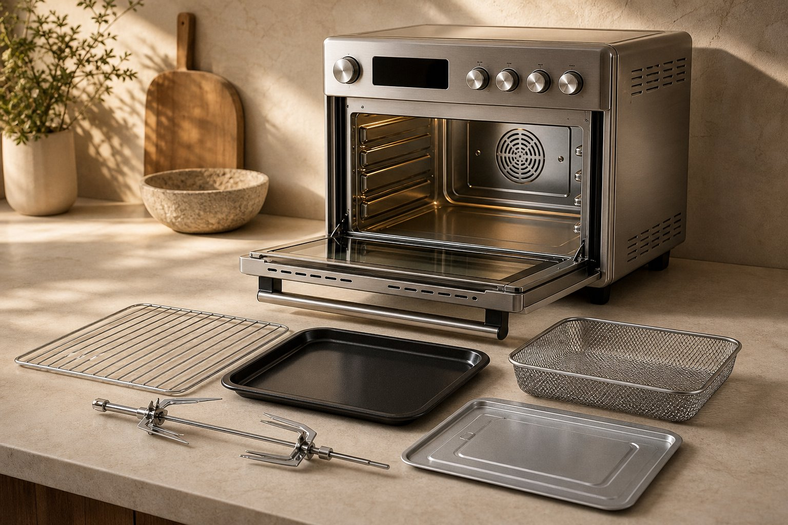

Questions · Ownership costs
Questions to ask before buying a multi-function kitchen appliance

“Multi-Function.” “4-in-1.” “10-in-1.” Listing titles on our queue use all of these — we quote them verbatim in the register, with sources. They’re marketing words, not specs. The purchase question underneath is simple: which of these functions will I actually use, and what do I give up for the rest?
Question 1: What does each function replace?
Make two columns: replaces and adds. A toaster oven that also air-fries replaces two appliances — that’s real value in a small kitchen. A sixth preset that performs one rarely-used setting adds nothing but button surface. If a function doesn’t replace something or unlock a meal you cook often, it isn’t a reason to buy.
Question 2: What’s in the box, and where does it live?
Multi-function usually means accessories: racks, trays, baskets, sometimes a rotisserie spit. Two observations from real listings we track: one “26QT French Door Multi-Function” model ships “Six Cooking Accessories Included”; one “TurboFry 4-in-1” lists air fry, bake, dehydrate, and frozen modes on the box (all verbatim, all sourced in the register). Every included part is a part you store, wash, and eventually lose. Count the drawer space first.
Question 3: How many jobs can it really do at once?
Functions listed together are usually alternatives, not simultaneous. A machine that air-fries and bakes does one at a time unless it has independent zones. If your real need is “dinner and sides together,” look for dual-zone or finish-together features — and ask what each zone’s true usable size is (capacity checklist).
Question 4: Controls or presets?
- Presets lower the learning curve but lock in someone else’s time and temperature for foods that don’t exist in your kitchen.
- Manual controls (time + temperature you set) age better and let you follow any recipe — including the ones on a bag of frozen fries.
- Ask whether presets can be overridden. Machines that force presets force guesswork.
Question 5: What’s the failure math?
One machine doing six jobs is one machine whose failure takes six jobs offline. Check the warranty length and, more importantly, parts availability: baskets, trays, and heating elements are the parts that wear. A brand’s replacement-parts store is a better predictor of ownership cost than any feature list.
Question 6: Does “multi-function” inflate the price of the one function you want?
Sometimes the single-purpose machine cooks better and costs less. The honest way to decide is the replace/adds list from Question 1: if the extras don’t earn their price, buy the simpler tool and spend the difference on a good probe thermometer — the cheapest upgrade to any kitchen’s results.
The five-minute version
- Functions must replace something or unlock a meal you cook often.
- Count accessories as storage cost, not bonus value.
- Ask what runs simultaneously — and at what size.
- Prefer override-able controls over locked presets.
- Check warranty and replacement parts before the feature list wins you over.